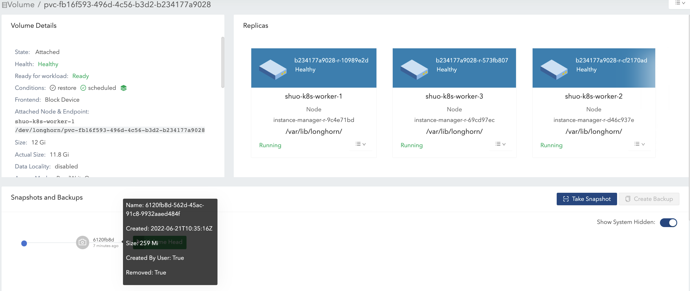

|
Dieses Dokument wurde mithilfe automatisierter maschineller Übersetzungstechnologie übersetzt. Wir bemühen uns um korrekte Übersetzungen, übernehmen jedoch keine Gewähr für die Vollständigkeit, Richtigkeit oder Zuverlässigkeit der übersetzten Inhalte. Im Falle von Abweichungen ist die englische Originalversion maßgebend und stellt den verbindlichen Text dar. |
|
Dies ist eine unveröffentlichte Dokumentation für SUSE® Storage 1.12 (Dev). |
Volumengröße
Volumen Size:

Dieser Wert, den Sie während der Erstellung des Volumens angegeben haben, stellt die Menge an Speicherplatz dar, die dem Volumen bei der Nutzung zur Verfügung steht.
Die folgenden sind weitere Möglichkeiten, dieses Konzept zu verstehen:
-
Das Volumen selbst ist nur ein Kubernetes-CRD-Objekt und die Volumendaten werden in Replikaten gespeichert. Dieser Wert stellt die nominale Größe jedes Replikats dar.
-
SUSE Storage Replikate verwenden spärliche Dateien, um Daten zu speichern. Dieser Wert stellt die maximale Größe dar, auf die sich eine spärliche Datei ausdehnen kann.
Replikate werden auf Knoten mit ausreichend zuweisbarem Speicherplatz geplant, um diese nominale Größe während der Erstellung des Volumens abzudecken. Für weitere Informationen siehe Knoten-Speicherplatznutzung.
|
Die maximale Volumengröße basiert auf dem Dateisystem der Festplatte (zum Beispiel 16383 GiB für |
Volumen Actual Size

Dieser Wert stellt die Menge an Speicherplatz dar, die von jedem Replikat (einschließlich des Volumenkopfes und der Snapshots) auf dem Knoten verwendet wird.
Da alle historischen Daten (die in den Snapshots gespeichert sind) und aktiven Daten in die Berechnung einfließen, kann dieser Wert die benutzerdefinierte nominale Größe überschreiten.
Die SUSE Storage UI zeigt diesen Wert nur an, wenn das Volumen läuft.
Beispiel
Im Beispiel werden wir erklären, wie sich das Volumen size und actual size nach einer Reihe von IO- und snapshotbezogenen Operationen ändern.
Die Abbildung zeigt die Dateiorganisation von einem Replikat. Der Volumenkopf und die Snapshots sind tatsächlich spärliche Dateien, die wir oben erwähnt haben.

-
Erstellen Sie ein 12 Gi Volumen mit einem einzelnen Replikat, verbinden Sie es anschließend mit einem Knoten und binden Sie es ein. Siehe Abbildung 1 der Illustration.
-
Für das leere Volumen beträgt der nominale
size12 Gi und deractual sizeist fast 0. -
Es gibt einige Metainformationen im Volumen, daher beträgt der
actual size260 Mi und ist nicht genau 0.
-

-
Schreiben Sie 4 Gi Daten (data#0) in den Einhängepunkt des Volumens. Der
actual sizewird um 4 Gi erhöht aufgrund der zugewiesenen Blöcke in der Replik für die 4 Gi Daten. Inzwischen zeigt derdfBefehl im Dateisystem ebenfalls den verwendeten Speicherplatz von 4 Gi an. Siehe Abbildung 2 der Illustration.

-
Löschen Sie die 4 Gi Daten. Dann zeigt der
dfBefehl, dass der verwendete Speicherplatz des Dateisystems fast 0 ist, aber deractual sizeunverändert bleibt.Benutzer können standardmäßig sehen, dass das Volumen
actual sizenach dem Löschen der 4 Gi Daten nicht verkleinert wurde. SUSE Storage ist ein blockbasiertes Speichersystem. Daher markiert die Löschung im Dateisystem nur die Blöcke, die zu der gelöschten Datei gehören, als ungenutzt. Derzeit wendet SUSE Storage keine TRIM/UNMAP-Operationen automatisch oder periodisch an. Wenn Sie eine Dateisystem-Trimmung durchführen möchten, überprüfen Sie bitte dieses Dokument für Details.
-
Dann schreiben Sie die 4 Gi Daten (data#1) erneut, und der
dfBefehl im Dateisystem zeigt wieder 4 Gi verwendeten Speicherplatz an. Deractual sizewird jedoch um 4 Gi erhöht und beträgt 8.25 Gi. Siehe Abbildung 3(a) der Illustration.Nach der Löschung kann das Dateisystem die kürzlich freigegebenen Blöcke von kürzlich gelöschten Dateien je nach Design des Dateisystems wiederverwenden oder nicht, und bitte beziehen Sie sich auf Blockzuweisungsstrategien verschiedener Dateisysteme. Wenn das nominale Volumen
size12 Gi beträgt, würde deractual sizeam Ende zwischen 4 Gi und 8 Gi liegen, da das Dateisystem die freigegebenen Blöcke möglicherweise wiederverwendet oder nicht. Andererseits, wenn das nominale Volumensize6 Gi beträgt, würde deractual sizeam Ende zwischen 4 Gi und 6 Gi liegen, da das Dateisystem die freigegebenen Blöcke in der 2. Schreibrunde wiederverwenden muss. Siehe Abbildung 3(b) der Illustration.Daher würde die Zuweisung eines angemessenen nominalen
sizefür ein Volumen, das schwere Schreibaufgaben gemäß dem IO-Muster hält, die Nutzung des Speicherplatzes effizienter gestalten.

-
Machen Sie einen Snapshot (snapshot#1). Siehe Abbildung 4 der Illustration.
-
Jetzt sind die Daten#1 im Snapshot#1 gespeichert.
-
Die neue Größe des Volumenkopfes ist fast 0.
-
Mit dem Volumenkopf und dem enthaltenen Snapshot bleibt die
actual sizebei 8.25 Gi.
-

-
Löschen Sie die Daten#1 vom Einhängepunkt.
-
Die Informationen zur Entfernung auf Dateisystemebene von data#1 werden in der aktuellen Volumenkopfdatei gespeichert. Für Snapshot#1 werden die Daten#1 weiterhin als historische Daten aufbewahrt.
-
Die
actual sizebeträgt weiterhin 8.25 Gi.
-
-
Schreiben Sie 8 Gi Daten (data#2) in den Einhängepunkt des Volumens und erstellen Sie anschließend einen weiteren Snapshot (snapshot#2). Siehe Abbildung 5 der Illustration.
-
Jetzt beträgt die
actual size16.2 Gi, was größer ist als die nominalesizedes Volumens. -
Aus der Perspektive eines Dateisystems wird der sich überschneidende Teil zwischen den beiden Snapshots als die Blöcke betrachtet, die wiederverwendet oder überschrieben werden müssen. Aber in Bezug auf SUSE Storage handelt es sich bei diesen Blöcken tatsächlich um neue Blöcke, die in einem anderen Snapshot beziehungsweise im Volumenkopf gespeichert werden. Siehe die 2 Snapshots in Abbildung 6.
Der Volumenkopf enthält nur die neuesten Daten des Volumens, während jeder Snapshot sowohl historische Daten als auch aktive Daten speichern kann, die höchstens Platz beanspruchen. Daher könnte das Volumen
actual size, dessen Größe sich aus der Summe des Volumenkopfes und aller Snapshots zusammensetzt, möglicherweise größer sein als die von den Benutzern angegebene Größe.Selbst wenn Benutzer keine Snapshots für Volumen erstellen, gibt es Operationen wie Wiederherstellung, Erweiterung oder Sicherung, die zur Erstellung von System-(versteckten) Snapshots führen würden. Infolgedessen ist es unter bestimmten Anwendungsfällen unvermeidlich, dass das Volumen
actual sizegrößer als die Größe ist. -

-
Löschen Sie Snapshot#1 und warten Sie, bis die Snapshot-Bereinigung abgeschlossen ist. Siehe Abbildung 7 der Illustration.
-
Hier SUSE Storage koalesziert tatsächlich den Snapshot#1 mit dem Snapshot#2.
-
Für den überlappenden Teil während der Koaleszierung werden die neueren Daten (Daten#2) in den Blöcken beibehalten. Dann werden einige historische Daten entfernt und das Volumen wird verkleinert (im Beispiel von 16,2 Gi auf 11,4 Gi).
-

-
Löschen Sie alle vorhandenen Daten (data#2) und schreiben Sie 11,5 Gi Daten (data#3) in den Einhängepunkt des Volumens. Siehe Abbildung 8 der Illustration.
-
Dies führt dazu, dass die tatsächliche Größe des Volumenkopfes 11,5 Gi beträgt und die gesamte tatsächliche Größe des Volumens 22,9 Gi beträgt.
-

-
Versuchen Sie, den einzigen Snapshot (Snapshot#2) des Volumens zu löschen. Siehe Abbildung 9 der Illustration.
-
Der Snapshot direkt hinter dem Volumenkopf kann nicht bereinigt werden. Wenn Benutzer versuchen, diese Art von Snapshot zu löschen, wird SUSE Storage den Snapshot als "Entfernen" markieren, ihn ausblenden und dann versuchen, den überlappenden Teil zwischen dem Volumenkopf und dem Snapshot für die Snapshotdatei freizugeben. Die letzte Operation wird in SUSE Storage als Snapshot-Prune bezeichnet und ist seit v1.3.0 verfügbar.
-
Da im Beispiel sowohl der Snapshot als auch der Volumenkopf den Großteil des nominalen Speicherplatzes beanspruchen, entspricht der überlappende Teil fast der tatsächlichen Größe des Snapshots. Nach dem Pruning beträgt die tatsächliche Größe des Snapshots 259 Mi und das Volumen wird von 22,9 Gi auf 11,8 Gi verkleinert.
-

Hier fassen wir die wichtigen Dinge im Zusammenhang mit der Nutzung des Speicherplatzes zusammen, die wir im Beispiel haben:
-
Unbenutzte Blöcke werden nicht freigegeben.
SUSE Storage wird keine TRIM/UNMAP-Operationen automatisch ausführen. Daher führt das Löschen von Dateien aus Dateisystemen nicht zu einer Verringerung/Verkleinerung der tatsächlichen Größe des Volumens. Sie müssen möglicherweise die Dokumentation überprüfen und es bei Bedarf selbst bearbeiten.
-
Zugewiesene, aber ungenutzte Blöcke werden nicht wiederverwendet.
Das Löschen und anschließende Schreiben neuer Dateien würde dazu führen, dass die tatsächliche Größe weiterhin zunimmt. Da das Dateisystem möglicherweise die kürzlich freigegebenen Blöcke von kürzlich gelöschten Dateien nicht wiederverwendet. Daher würde die Zuweisung einer angemessenen nominalen Größe für ein Volumen, das intensive Schreibvorgänge gemäß dem IO-Muster enthält, die Nutzung des Speicherplatzes effizienter gestalten.
-
Durch das Löschen von Snapshots könnte der überlappende Teil der verwendeten Blöcke eliminiert werden, unabhängig davon, ob die Blöcke kürzlich vom Dateisystem freigegeben wurden oder noch historische Daten enthalten.
Vorschläge zur Speicherkonfiguration für Volumes
-
Reservieren Sie genügend freien Speicherplatz auf den Festplatten als Puffer, falls die tatsächliche Größe der vorhandenen Volumes weiter ansteigt.
-
Eine allgemeine Schätzung für den maximalen Speicherverbrauch eines Volumes ist
(N + 1) x head/snapshot average actual size
-
wobei
Ndie Gesamtzahl der Snapshots ist, die das Volume enthält (einschließlich des Volume-Headers), und das zusätzliche1für den temporären Speicher, der möglicherweise für das Löschen von Snapshots erforderlich ist. -
Die durchschnittliche tatsächliche Größe der Snapshots variiert und hängt von den Anwendungsfällen ab. Wenn Snapshots regelmäßig für ein Volume erstellt werden (z. B. durch wiederkehrende Snapshot-Jobs), wäre der Durchschnittswert die durchschnittliche Größe der geänderten Daten für das Volume im Zeitraum der Snapshot-Erstellung. Wenn es intensive Schreibvorgänge für Volumes gibt, entspricht die durchschnittliche tatsächliche Größe des Volumenkopfes beziehungsweise des Snapshots der nominalen Größe des Volumes. In diesem Fall ist es besser,
Storage Over Provisioning Percentagekleiner als 100 % zu setzen, um eine Erschöpfung des Speicherplatzes zu vermeiden. -
Einige erweiterte Fälle:
-
Es gibt einen wiederkehrenden Snapshot-Job mit einer Aufbewahrungszahl von
N. Dann kann die Formel erweitert werden zu:(M + N + 1 + 1 + 1 + 1) x head/snapshot average actual size
-
Die Erklärung der Formel:
-
Msind die Snapshots, die von Benutzern manuell erstellt wurden. Wiederkehrende Jobs sind nicht dafür verantwortlich, diese Art von Snapshot zu entfernen. Sie können nur von Benutzern gelöscht werden. -
Nist die Aufbewahrungszahl des wiederkehrenden Snapshot-Jobs. -
Der 1.
1bedeutet den Volumenkopf. -
Der 2.
1bedeutet den zusätzlichen Snapshot, der durch den wiederkehrenden Job erstellt wird. Da der wiederkehrende Job immer einen neuen Snapshot erstellt und dann den ältesten Snapshot löscht, wenn die aktuellen Snapshots, die er selbst erstellt hat, die Aufbewahrungszahl überschreiten. Bevor die Löschung beginnt, gibt es einen zusätzlichen Snapshot, der zusätzlichen Speicherplatz beanspruchen kann. -
Der 3.
1ist der Systemsnapshot. Wenn der Wiederaufbau ausgelöst wird oder die Erweiterung angefordert wird, wird SUSE Storage einen Systemsnapshot erstellen, bevor die Operationen gestartet werden. Und dieser Systemsnapshot kann möglicherweise nicht sofort bereinigt werden. -
Der 4.
1ist für den temporären Speicher, der möglicherweise für die Snapshot-Löschung/-Bereinigung erforderlich ist.
-
-
-
Benutzer möchten überhaupt keinen Snapshot. Weder (manuell erstellte) Snapshots noch wiederkehrende Jobs werden gestartet. Angenommen, Einstellung _Automatische Bereinigung von systemgenerierten Snapshots ist aktiviert, dann würde die Formel wie folgt aussehen:
(1 + 1 + 1) x head/snapshot average actual size
-
Der schlimmste Fall, der zu so viel Speicherplatzverbrauch führt:
-
Irgendwann wird der 1. Wiederaufbau/Erweiterung ausgelöst, was zur Erstellung des 1. Systemsnapshots führt.
-
Die Bereinigungen vor und nach dem 1. Wiederaufbau bewirken nichts.
-
-
Es werden Daten in den neuen Volumenkopf geschrieben, und der 2. Wiederaufbau/Erweiterung wird irgendwie ausgelöst.
-
Die Snapshot-Bereinigung vor dem 2. Wiederaufbau kann zu einer Verkleinerung des 1. Systemsnapshots führen.
-
Dann wird der 2. Systemsnapshot erstellt und der Wiederaufbau gestartet.
-
Nach Abschluss des Wiederaufbaus würde die anschließende Snapshot-Bereinigung zur Zusammenführung der 2 Systemsnapshots führen. Diese Zusammenführung erfordert temporären Speicherplatz.
-
-
Während der anschließenden Snapshot-Bereinigung für den 2. Wiederaufbau werden weitere Daten in den neuen Volumenkopf geschrieben.
-
-
Die Erklärung der Formel:
-
Der 1.
1bedeutet den Volumenkopf. -
Der 2.
1ist der zweite Systemsnapshot, der im schlimmsten Fall erwähnt wird. -
Der 3.
1ist für den temporären Speicher, der möglicherweise für die Bereinigung/Zusammenführung der 2 System-Snapshots erforderlich ist.
-
-
-
-
-
-
Behalten Sie nicht zu viele Snapshots für die Volumes.
-
Das Bereinigen von Snapshots hilft, Speicherplatz zurückzugewinnen. Es gibt zwei Möglichkeiten, Snapshots zu bereinigen:
-
Löschen Sie die Snapshots manuell über die SUSE Storage Benutzeroberfläche.
-
Richten Sie einen wiederkehrenden Snapshot-Job mit einer Aufbewahrung von 1 ein, dann werden die Snapshots automatisch bereinigt.
Beachten Sie auch, dass der zusätzliche Speicherplatz, bis zum nominalen Volumen
size, während der Bereinigung und Zusammenführung von Snapshots erforderlich ist. -
-
Ein angemessenes nominales Volumen
sizeentsprechend der Arbeitslast.
Fehlerbehebung
Die Arbeitslast verursacht den no space left on device-Fehler.
Um den “no space left on device”-Fehler zu beheben, müssen Sie verstehen, dass der Unterschied zwischen einem vollen Volume und vollen Knotenfestplatten entscheidend für das ordnungsgemäße Speichermanagement in SUSE Storage ist.
Volume voll
Ein Volume ist voll, wenn sein gemountetes Dateisystem seine Kapazitätsgrenze erreicht hat. * Datenwrites schlagen mit “no space left on device” Fehlern fehl. * Die Hostdisk für das Replica des Volumes hat möglicherweise noch verfügbaren Speicherplatz für andere Volumes.
-
Merkmale:
-
Der
dfBefehl zeigt 100% Nutzung für das gemountete Dateisystem an. -
Anwendungen können keine neuen Daten am Volume-Einhängepunkt schreiben.
-
Beispiel:
$ df -h /mnt/longhorn-volume-example-dir
Filesystem Size Used Avail Use% Mounted on
/dev/longhorn-volume-example 12G 12G 0 100% /mnt/longhorn-volume-example-dirKnotendisk voll
Die Knotenfestplatten haben möglicherweise nicht genügend Speicherplatz, um Volumenoperationen zu ermöglichen, da Volumes dünn bereitgestellt sind und die Replikate weiter wachsen. * Datenwrites schlagen mit “no space left on device” Fehlern fehl, selbst wenn das Dateisystem des Volumes nicht voll ist. * Volumenoperationen wie Erstellung, Erweiterung und Snapshot-Management können eingeschränkt sein. * Neu erstellte Volumenreplikate können nicht auf die vollen Festplatten geplant werden.
-
Merkmale:
-
Anwendungen können keine neuen Daten am Volume-Einhängepunkt schreiben, obwohl das Volume nicht voll ist.
-
SUSE Storage Vorgänge auf diesen Festplatten, wie die Erstellung von Replikaten, der Wiederaufbau oder Snapshot-Vorgänge, können fehlschlagen.
-
Volumes mit Replikaten auf diesen Knotenfestplatten sind betroffen.
-
Schutz der Datenintegrität bei Festplatten, die keinen Speicherplatz mehr haben.
Wenn mehrere Replikate gleichzeitig auf “no space left on device” Fehler stoßen, implementiert SUSE Storage den Schutz der Datenintegrität. Wenn alle beschreibbaren Replikate auf Festplatten sind, die keinen Speicherplatz mehr haben, bewahrt das System die maximale Anzahl von Replikaten, die die gleiche Datenmenge geschrieben haben (die höchste Anzahl geschriebener Bytes). Dies gewährleistet die Datenkonsistenz durch:
-
Beibehalten der maximalen Anzahl von Replikaten, die die gleiche Datenmenge geschrieben haben. Dies vermeidet massive Wiederaufbau-Operationen von Replikaten, ermöglicht einen effizienten Wiederaufbau, wenn die Knotenfestplatten von Speicherplatzproblemen genesen, und stellt sicher, dass Benutzer weiterhin konsistent auf Daten zugreifen können.
-
Markieren anderer Replikate als
ERR, um Datenkorruption zu verhindern. Dies stellt sicher, dass Benutzer konsistent auf Daten von beibehaltenen Replikaten zugreifen können, und Replikate, die alsERRmarkiert sind, werden aus beibehaltenen Replikaten neu aufgebaut, um die Datenintegrität zu wahren, wenn die Knotenfestplatten von Speicherplatzproblemen erholen. -
Aufrechterhalten der Zugänglichkeit des Volumens, selbst wenn alle zugrunde liegenden Festplatten voll sind.
Wenn beispielsweise die Replikate A, B und C nach dem Schreiben von 1MB, 2MB und 2MB jeweils auf Speicherfehler stoßen, bleiben die Replikate B und C aktiv, während das Replikat A als ERR markiert wird.
Lösungen
Bei Auftreten des no space left on device Fehlers überprüfen Sie zuerst die Dateisystemnutzung des Volumens und dann die Festplatte, die das Volumenreplikat hostet.
-
Überprüfen Sie die Dateisystemnutzung des Volumens: Wenn die Dateisystemnutzung des Volumens 100% beträgt (unter Verwendung des folgenden Befehls):
df -h /mnt/your-volumeSie sollten das Volumen erweitern oder unnötige Dateien aus dem Dateisystem entfernen.
-
Überprüfen Sie die Nutzung der Knotenfestplatte SUSE Storage: Überprüfen Sie die Festplattennutzung in der SUSE Storage UI unter Node > Node Disk oder verwenden Sie die Befehlszeile:
# Check through SUSE Storage UI: Node > Node Disk # Or check the data path mount point df -h /var/lib/longhorn # default data pathWenn die Festplattennutzung 100% beträgt, befolgen Sie diese Schritte, um die Arbeitslasten wiederherzustellen:
-
Reduzieren Sie die Arbeitslast.
-
Erweitern Sie die Festplattengröße oder entfernen Sie unnötige Dateien wie verwaiste Replikatverzeichnisse und verwendete Sicherungsbilder auf der Festplatte.
-
Erhöhen Sie die Arbeitslast.
-